Commercial
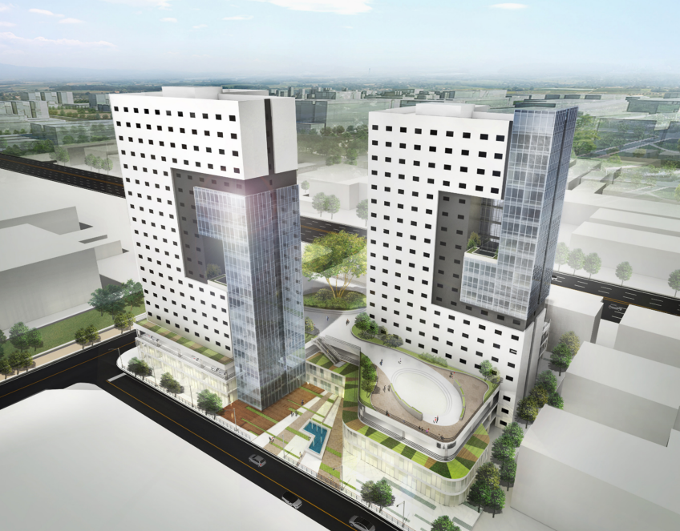
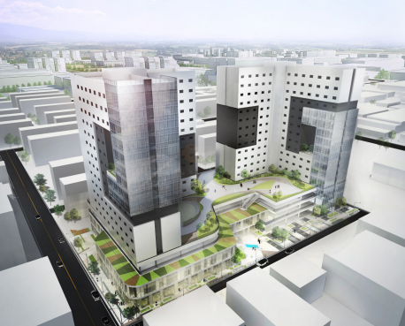
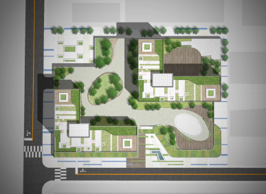
- 구미 환경개선펀드 2016
- 위치: 경상북도 구미시 공단동, 연면적: 43,582.80 ㎡, 대지면적: 8,132.00 ㎡, 용도: 공동주택 / 업무시설 / 제 2종 근린생활시설
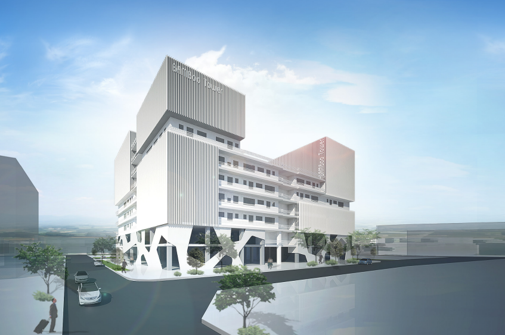
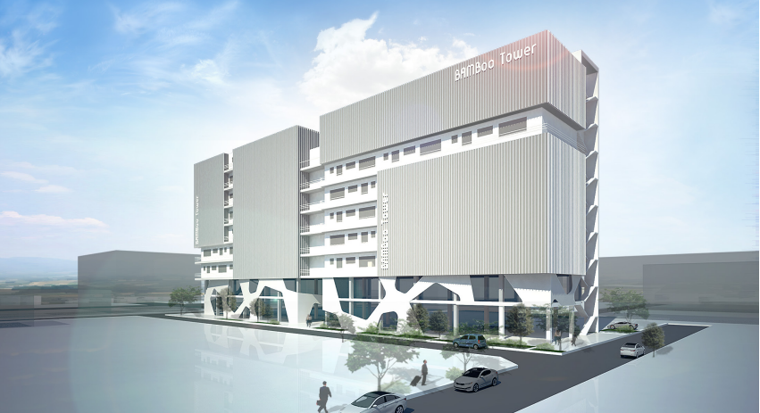
- 구미 지식산업센터 2015
- 위치: 경상북도 구미시 공단동, 연면적: 24,727.70 ㎡, 대지면적: 8,132.00 ㎡, 용도: 지식산업센터 / 지원시설
- 웰스톤시티 입면 및 조경차별화 2014
- 위치: 용인시 수지구 신봉동, 연면적: 21,839.07 ㎡, 대지면적: 6,606.00 ㎡, 용도: 제 1,2종 근린생활시설, 공동주택
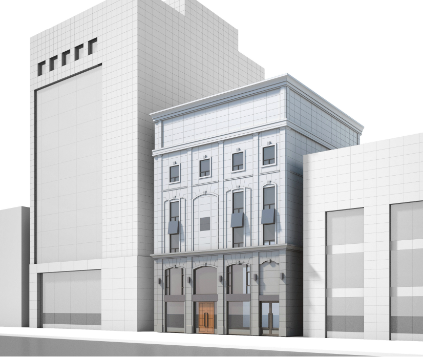
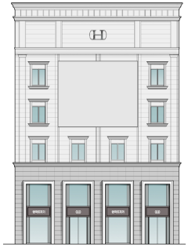
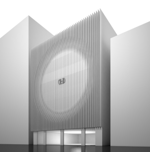
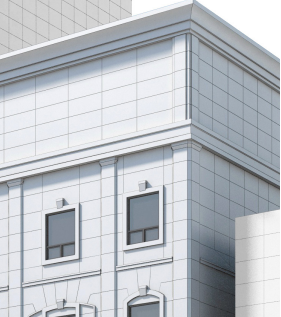
- 한국도자기 사옥 리모델링 2014
- 위치: 서울시 강남구 논현동, 연면적: 1,383.08 ㎡, 대지면적: 444.3 ㎡, 용도: 업무시설, 제 1,2종 근린생활시설
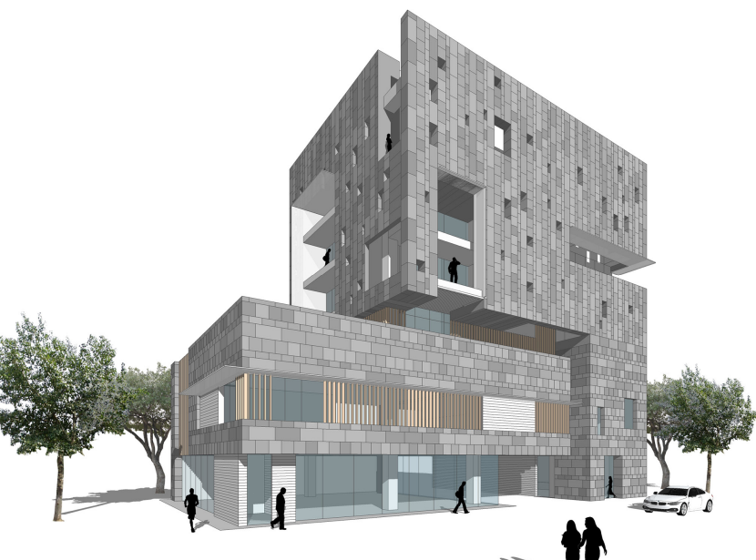
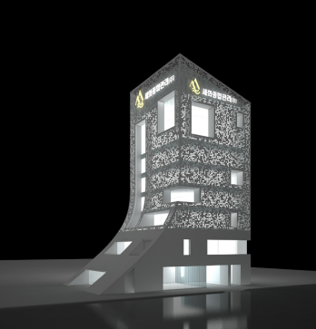
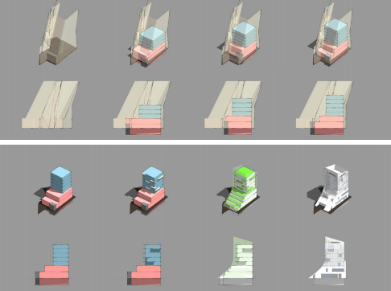
- 세화사옥 신축공사 2014
- 위치: 서울시 강서구 방화동, 연면적: 2,894.66 ㎡, 대지면적: 573.48 ㎡, 용도: 제2종 근린생활시설
- 광희동 근린생활시설 2013
- 위치: 서울시 중구 광희동, 연면적: 601.48 ㎡, 대지면적: 234.33 ㎡, 용도: 제 1,2종 근린생활시설
- 신내동 근린생활시설 2013
- 위치: 서울시 중랑구 신내동, 연면적: 987.56 ㎡, 대지면적: 378 ㎡, 용도: 제 1,2종 근린생활시설
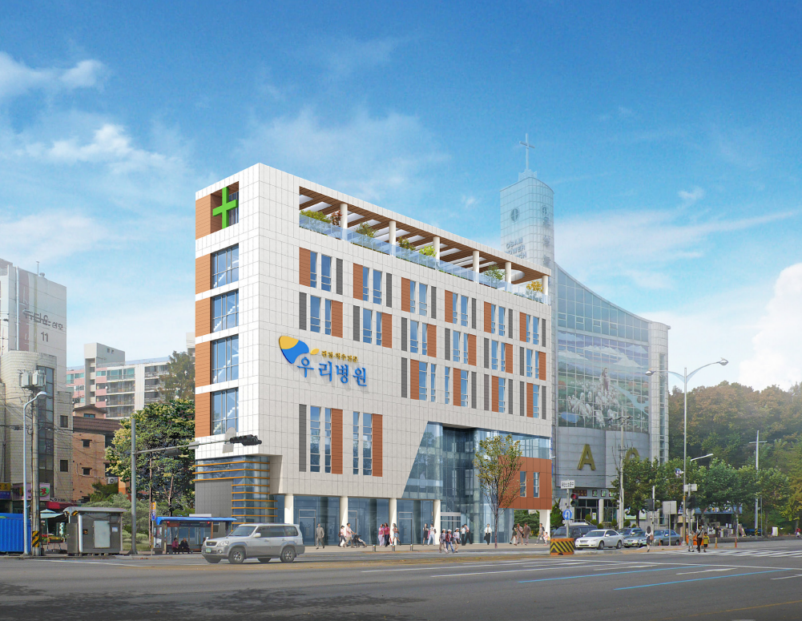
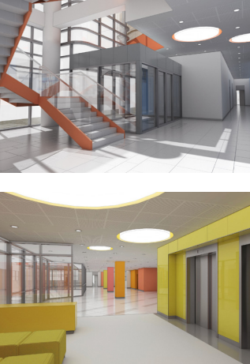
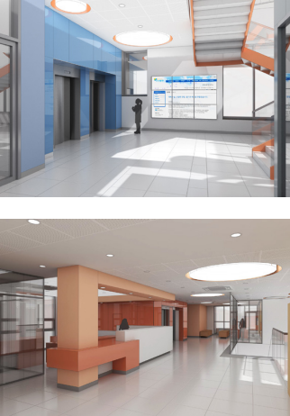
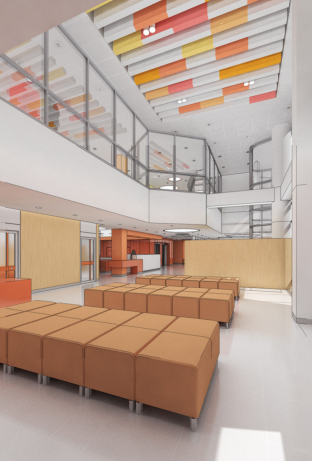
- 안양 우리병원 2013
- 위치: 경기도 안양시 동안구 비산동, 연면적: 4,925.23 ㎡, 대지면적: 1,361.00 ㎡, 용도: 의료시설(병원), 제1종근린생활시설
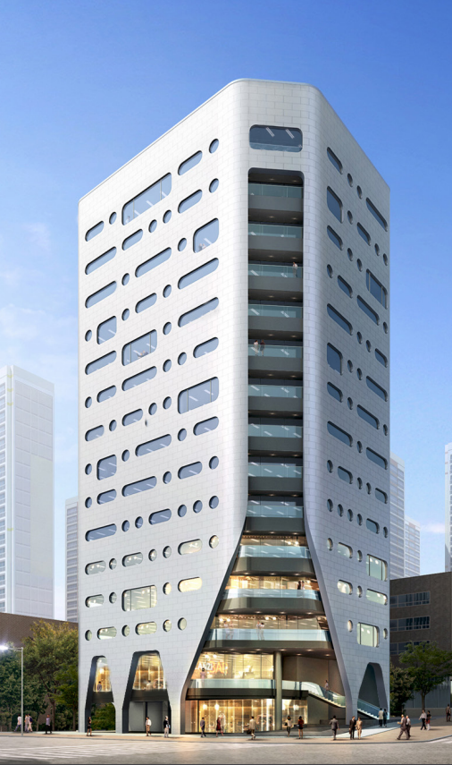
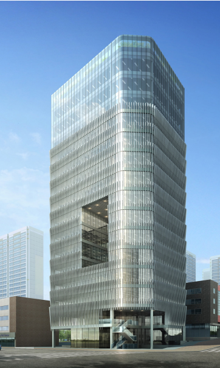
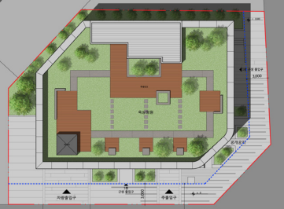
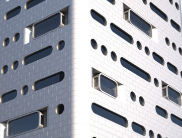
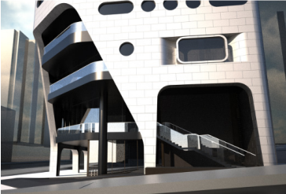
- 삼성동 업무시설 2013
- 위치: 서울시 강남구 삼성동, 연면적: 10,249.84 ㎡, 대지면적: 969 ㎡, 용도: 업무시설 / 제 1,2종 근린생활시설/ 판매시설
- 삼성동 업무시설 지명현상 2012
- 위치: 서울시 강남구 삼성동, 연면적: 10,633.74 ㎡, 대지면적: 969 ㎡, 용도: 업무시설 / 제 1,2종 근린생활시설
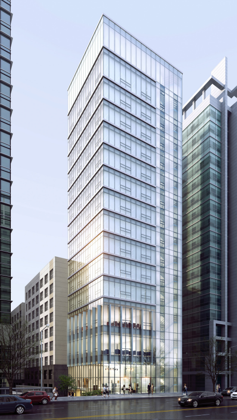
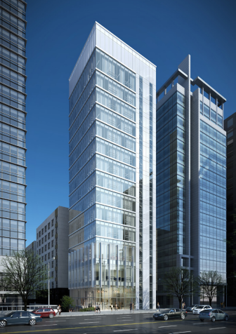
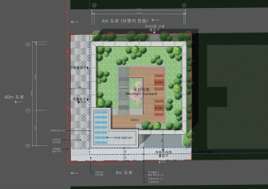
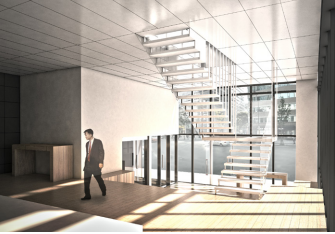
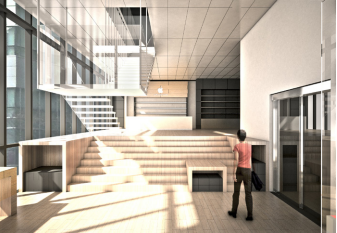
- 역삼동 달빌딩 업무시설 2012
- 위치: 서울시 강남구 역삼동, 연면적: 3,888.73 ㎡, 대지면적: 381 ㎡, 용도: 업무시설 / 제 1,2종 근린생활시설
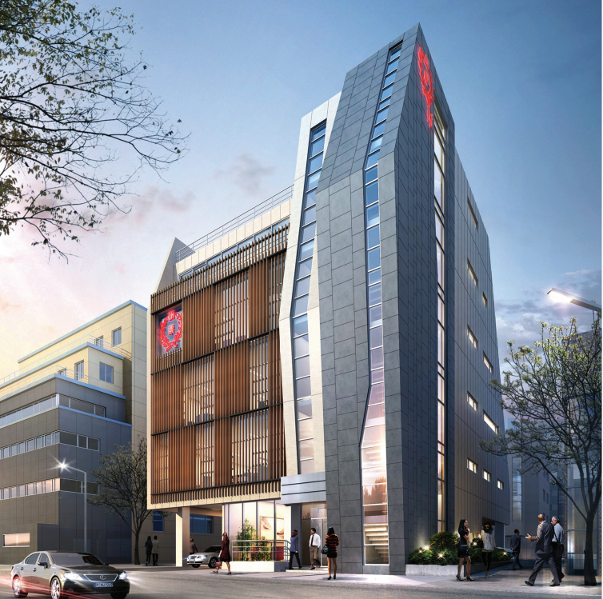
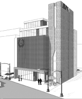
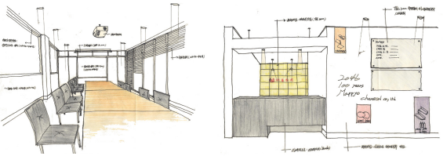
- 매표화학 사옥 2011
- 위치: 서울시 중구 장충동 2가, 연면적: 1,293.02 ㎡, 대지면적: 571.90 ㎡, 규모: 지상 5층 / 지하 1층
- 하노이 HADO HOTEL 2009
- With DA, 위치: 베트남 하이노, 연면적: 10,991 ㎡, 대지면적: 1,586 ㎡, 용도: 호텔
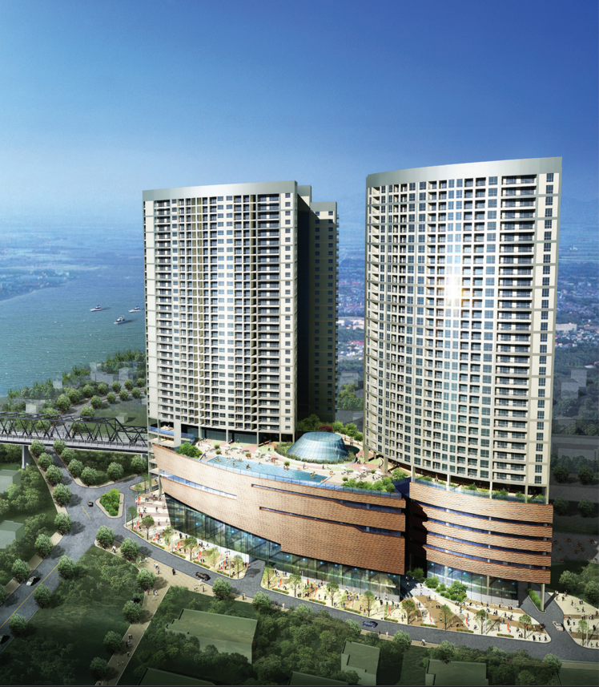
- 하노이 MIPEC 주상복합 2009
- With DA, 위치: 베트남 하이노, 연면적: 188,697 ㎡, 대지면적: 16,609 ㎡, 용도: 주상복합
- 안산 이풀 실내박물관 2013
- 위치: 경기도 안산시 팔곡동, 연면적: 1,498.88 ㎡, 대지면적: 2,995.00 ㎡, 용도: 문화 및 집회시설 전시장 박물관
For more projects
Back to home page